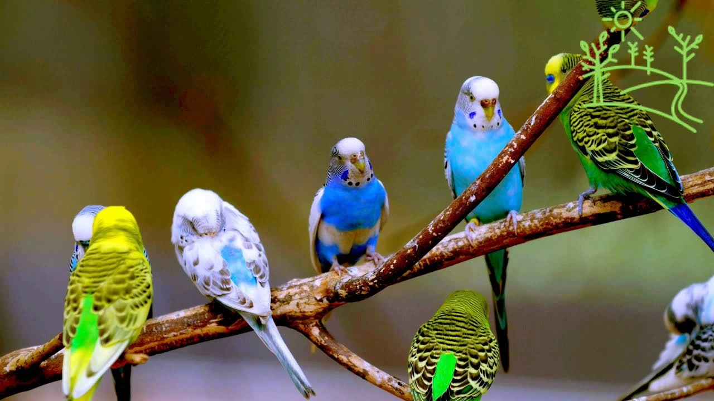

Мы создали небольшой сайт про волнистых попугайчиков, чтобы помочь людям у которых уже есть питомец или тем, кто собирается его завести. На нашем сайте вы найдете информацию про уход за волнистым попугаем, а также у нас есть форум, на котором другие пользователи могут делиться своим опытом содержания волнистого попугайчика.

Волнистые попугайчики - это птицы, относящиеся к попугаевому семейству, отряд попугаеобразные. Пташки этого вида единственные в своем роде "Melopsittacus". Волнистые попугайчики являются наиболее распространенным видом, которому отдают предпочтение любители домашних питомцев. Есть множество различных с этой породой пташек, на которых они запечатлены с разнообразными окарасами. Также, они общительны и дружелюбны, что позволяет легко наладить с ними контакт.